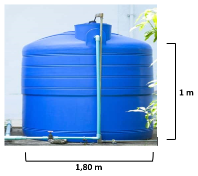
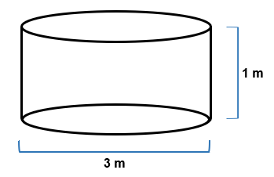

Você chegou ao último módulo da etapa 2, finalizando o projeto de construção da casa. Ao idealizar a construção de sua casa própria, cada detalhe é minuciosamente pensado para que o ambiente que será seu lar seja o mais aconchegante possível. Para compor a decoração e os acabamentos do lar, você pode buscar lojas do comércio em geral, como de materiais de construção, de móveis, de departamento, entre outras.
Alguns objetos e materiais utilizados em construções e decorações têm suas formas, medidas e quantidades previamente calculadas, como forma de evitar o desperdício ou a falta deles, por exemplo, a quantidade de concreto necessário a uma calçada, a capacidade da caixa-d'água que abastecerá a residência, a quantidade de tinta para pintar as paredes, entre outros, para manter o bom andamento e a finalização da obra, conforme planejado.
Pensando nos detalhes da conclusão da obra, para começar, será realizada a construção da calçada ao redor da casa, mas agora surgiram algumas dúvidas. Qual o material necessário para fazer a calçada? Deve ser usado concreto ou piso? Qual será a medida da calçada?
O primeiro passo é decidir a medida da calçada. O segundo passo é escolher qual o melhor tipo de material para usar na calçada. As opções possíveis são concreto, piso, pedra ou outro material adequado.
Com a ideia de reservar um espaço para ser construído um jardim e uma garagem, na frente da casa, serão deixadas uma parte de concreto e outra de grama. A calçada terá 140 centímetros de largura, 500 centímetros de comprimento e 10 centímetros de altura e será concretada, sendo a faixa central da entrada da casa.

Fotografia contendo várias casas, com uma em destaque. Há uma calçada ligando a rua à porta de entrada na fachada.

Para construir a calçada, o responsável da obra pode fazer uma estrutura com ripas de madeira. Além de servirem como guia na espessura do concreto e no nivelamento, também servirão para segurar a massa. Veja na figura a seguir.
Ilustração da construção de uma calçada. Há um homem agachado fazendo a construção com ripas de madeira para servirem como guia na espessura do concreto e nivelamento, para segurar a massa.
Ao orçar os custos de uma obra, percebe-se que todos os gastos fazem diferença. O ideal é não ter desperdício de material, calculando o volume necessário para preencher o espaço formado pelas ripas com concreto.
Com o intuito de descobrir o volume, observe as particularidades dos formatos que serão utilizados como moldes para construir a calçada e, com isso, poder realizar os cálculos de acordo com as representações que lembram os sólidos geométricos.
Você já reparou que, observando ao seu redor, entre os objetos que o cercam, é possível encontrar representações de sólidos geométricos? Alguns objetos presentes em obras de engenharia, arquitetura, artes plásticas, entre outros, mostram a imensa quantidade de formas que podem ser relacionadas com figuras estudadas na geometria. Sólido, em geometria, é uma figura geométrica tridimensional, pois tem três dimensões: comprimento, largura e altura. Os sólidos geométricos podem ser classificados em poliedros ou corpos redondos.
Veja alguns exemplos de sólidos geométricos.
Ilustrações com três quadros. No primeiro quadro, há nove sólidos diversos. No segundo, há poliedros, como o bloco retangular. No terceiro quadro, há corpos redondos, como a esfera.
Algumas formas de objetos podem ser estudadas matematicamente por meio de representações chamadas de sólidos geométricos. Os sólidos geométricos compreendem grandes grupos, como os poliedros e os corpos redondos. Poliedros são sólidos geométricos que não têm formas arredondadas e possuem três elementos.
Veja na figura:
Ilustração de um cubo, com destaque para as faces, os vértices e as arestas.
É possível verificar a representação de todas as faces de um poliedro na superfície plana por meio de sua planificação. Veja um exemplo na animação a seguir.
Ao planificar um poliedro, fica mais clara a observação do seu número de faces e do formato dos polígonos que compõem o poliedro.
O formato da imagem da construção da calçada é semelhante ao que, na matemática, no grupo dos poliedros, se chama prisma especificamente de bloco retangular ou paralelepípedo. Prisma é quando o sólido geométrico tem duas bases paralelas, que são polígonos congruentes; as demais faces são retangulares. Ele é nomeado conforme com o polígono das suas bases.
No cotidiano, é possível identificar vários objetos que lembram o formato de um prisma, por exemplo, sapatas, pilares, prédios, entre outros. No quadro a seguir, é possível ver dois exemplos comparando os objetos citados e os prismas.


Observando a animação a seguir, é possível associar sua forma à de um prisma de base retangular, que também é popularmente chamado de “paralelepípedo” ou “bloco retangular”. Então o formato da calçada que será construída terá o formato de um paralelepípedo, conforme a comparação a seguir.


São utilizadas três medidas para determinar a dimensão de uma calçada, as medidas recebem as denominações comprimento, largura e altura. Para calcular o espaço necessário para preencher com o concreto, é utilizada a multiplicação das medidas do paralelepípedo. Veja a fórmula a seguir.
A multiplicação do comprimento pela altura dá a dimensão da base.

No caso do formato da calçada, as medidas são 140 centímetros de largura, 500 centímetros de comprimento e 10 centímetros de altura. Para calcular o volume de concreto necessário para preencher esse prisma, são multiplicados:

Considerando os cálculos para não haver desperdício de material na construção da calçada, será necessário um volume de concreto correspondente a setecentos mil centímetros cúbicos. A unidade de medida do volume é sempre elevada ao cubo. Por exemplo: metro cúbico (m³), centímetro cúbico (cm³), entre outros. Esse procedimento de cálculo é válido para calcular o volume de qualquer prisma com base retangular.

Veja alguns exemplos de reservatórios de água utilizados, clicando nos botões a seguir.
Durante a obra, podem ser observados alguns objetos que desempenham papel importante na construção, entre esses objetos, é possível citar a caixa-d’água, também conhecida como reservatório domiciliar. As opções mais utilizadas são o polietileno e o aço inox e poliéster com fibra de vidro.
Diferentemente das cisternas que armazenam água da chuva e ficam instaladas sob o chão, a caixa-d’água armazena a água vinda da rede e apresenta duas funções importantes.
A caixa-d’água normalmente se encontra na parte superior das residências ou em cima de estruturas próprias para esse fim.
Veja, a seguir, como acontece em algumas regiões do país.
No nordeste do país, as cisternas de alvenaria são muito utilizadas pela população. Esse reservatório é feito basicamente com tijolos, cimento e cal e serve para captar, armazenar e conservar a água da chuva principalmente. Sua capacidade pode variar entre 16 mil e 500 mil litros. Normalmente, por ser de grande porte, a cisterna de alvenaria comporta um alto volume de água, por isso é preciso dispor de um amplo espaço no terreno para sua instalação.
Homens trabalhando em construção de uma cisterna.
O programa do governo, chamado Cisternas, atende a famílias do semiárido, construindo cisternas próximas a casas e escolas e para atender a produção em períodos de seca. A mão de obra e a compra dos materiais ocorrem na própria região para beneficiar o comércio local e as técnicas e metodologias utilizadas, contemplando diretamente a população local.
Além da água para beber e para o uso diário, as cisternas possibilitam também a geração de renda por meio da agricultura e da pecuária familiar, garantindo o sustento dessas famílias e viabilizando a economia regional, trazendo autonomia no suprimento de água em períodos de escassez, levando conforto, cidadania e saúde para milhares de famílias.
Tanto a caixa-d'água quanto a cisterna têm suas medidas e capacidades previamente informadas e estabelecidas. Observe que ambas podem apresentar o formato cilíndrico. Mas como fazer para descobrir quanto um objeto de formato cilíndrico comporta em seu interior?
Observe os elementos que compõem esta forma. O cilindro é um sólido geométrico, classificado como corpo redondo, com formato alongado e arredondado. Seus principais elementos são as duas bases, a altura, a área lateral e o raio da base.
Ilustração de um objeto cilíndrico com formato alongado e arredondado. Há setas indicando sua base e raio na parte inferior da figura, setas do lado direito indicando área lateral, altura e base e uma seta do lado esquerdo indicando seu eixo.
Para facilitar a compreensão e a visualização das formas que compõem o cilindro, vamos utilizar a planificação de um sólido geométrico, que consiste na representação de todas as suas faces em forma bidimensional, permitindo visualizar o todo.
https://www.geogebra.org/m/XzfFNDYV
Simulador: Geogebra
Fonte: SIMAS, Fábio. Planificação do cilindro. Geogebra, [s.d.]. Disponível em: https://www.geogebra.org/m/XzfFNDYV. Acesso em: 19 ago. 2022.
Na planificação, é possível perceber que o cilindro é formado por duas figuras geométricas: o círculo, com a mesma medida de raio nas duas bases, e o retângulo, na área lateral. Essas informações auxiliarão a encontrar o volume dele.
A circunferência e o círculo são figuras parecidas, porém elas apresentam características distintas. A circunferência é uma figura geométrica plana constituída por um conjunto de pontos igualmente distantes do centro, ou seja, ela é a linha que contorna a região interna chamada de círculo.
Ilustração de um círculo. Há uma seta apontando para a linha que o contorna chamada de “circunferência” e uma seta apontando para a região interna chamada de “círculo”.
Tanto o círculo quanto a circunferência apresentam os mesmos elementos: o diâmetro é a distância de um lado ao outro, passando pelo centro da figura, e o raio é a distância entre a borda da figura e seu centro, representando a metade do diâmetro. A corda é um segmento de reta que liga dois pontos da circunferência.
Ilustração de um círculo. Há uma linha de um lado ao outro passando pelo centro chamada de “diâmetro”, uma linha saindo do centro da figura para o lado direito chamada de “raio” e uma linha cortando a figura de um lado ao outro, na parte inferior, sem passar pelo centro, chamada de “corda”.
Depois de conhecer os elementos de um cilindro, é possível responder à pergunta anterior: como descobrir quanto um objeto de formato cilíndrico comporta em seu interior? Para isso, deve-se calcular a área do círculo.
A = π (PI) . r²
Fórmula da área do cilindro, que é igual a pi multiplicado pela altura.
Em que:
Com essa informação, é possível calcular o volume de uma caixa-d’água ou cisterna com o formato de um cilindro. Como a base do cilindro é circular, primeiramente deve-se calcular a área do círculo e depois multiplicá-la pela altura. Veja os exemplos em que a fórmula de cálculo do volume do cilindro foi aplicada em situações reais.
Volume do cilindro = área da base . altura
Fórmula do volume do cilindro, que é igual à área da base multiplicada pela altura.
Onde:
Área da base = π. r² (área do círculo)
Fórmula da área da base, que é igual a pi multiplicado pelo raio ao quadrado (área do círculo).
π (PI) = 3,14
Fórmula do pi, que é igual a três, vírgula, quatorze.
Vamos adquirir uma caixa-d'água cilíndrica para a casa que estamos construindo? Podemos comprar uma de polietileno, por ser leve e de fácil instalação, com as dimensões indicadas a seguir. Considerando o π = 3,14, qual seria o volume, em litros, que pode ser armazenado nesse reservatório?
Figura – Cisterna cilíndrica
Fonte: 3TC Isolamento (2020)
Caixa-d'água cilíndrica, fechada em cima, com saída de tubulação. O diâmetro da base é um metro e 80 centímetros e a altura é de um metro.
Para calcular a área da base, vamos precisar do raio. Na imagem, pode-se notar que o diâmetro da caixa-d'água é de 1,80 m. Logo conclui-se que o raio é a metade desse valor, ou seja, 0,90 m. Em seguida, as medidas são aplicadas na fórmula:
Área da base = π. r² (área do círculo)
Fórmula da área da base, que é igual a pi multiplicado pelo raio ao quadrado.
A CÍRCULO = 3,14 . (0,90)2
Fórmula da área do círculo, que é igual a três, vírgula, quatorze, multiplicados por zero, vírgula, noventa, ao quadrado.
A CÍRCULO = 3,14 . 0,81
Fórmula da área do círculo, que é igual a três, vírgula, quatorze, multiplicados por zero, vírgula, oitenta e um.
A CÍRCULO = 2,5434 m2
Fórmula da área do círculo, que é igual a dois, vírgula, cinco, quatro, três, quatro metros quadrados.
Agora que já encontramos a área da base, que é o círculo, podemos calcular o volume do cilindro por meio da seguinte fórmula:
Volume do cilindro = área da base . altura
VCILINDRO = 2,5434 . 1
Fórmula do volume do cilindro, que é igual a dois, vírgula, cinco, quatro, três, quatro multiplicados por um.
VCILINDRO = 2,5434 m3
Fórmula do volume do cilindro, que é igual a dois, vírgula, cinco, quatro, três, quatro metros cúbicos.
O resultado do cálculo do volume foi dado em metros cúbicos. Como precisamos saber quantos litros de água cabem nesse reservatório, teremos que transformar metros cúbicos em litros. Sabendo que 1 m3 é 1.000 litros, multiplicaremos o volume encontrado por 1.000, conforme indicado:
2,5434 m3 . 1000 → 2543,4 L
Fórmula de dois, vírgula, cinco, quatro, três, quatro metros cúbicos multiplicados por mil, resultando em dois mil e quinhentos e quarenta e três, vírgula, quatro litros.
Logo, uma caixa-d'água com capacidade para 2,5434 m3 comporta aproximadamente 2.543,4 L de água em seu interior.
Se, além da caixa-d'água, resolvêssemos construir uma cisterna em formato cilíndrico próximo da casa, para captar e armazenar água da chuva, conforme as medidas indicadas na imagem, qual seria o volume de água em litros que essa cisterna comportaria? (Considere o π = 3,14.)
Figura – Cisterna cilíndrica
Fonte: Sesc EAD EJA (2022)
Ilustração de uma cisterna cilíndrica, com diâmetro da base de três metros e um metro de altura.
Seguiremos o mesmo processo que fizemos com a caixa-d'água. Para calcular a área da base, vamos precisar do raio. Na imagem da cisterna, o diâmetro é de 3 m, logo podemos concluir que o raio é a metade desse valor: 1,5 m. Em seguida, aplicamos as medidas na fórmula.
Área da base = π . r² (área do círculo)
Fórmula da área da base, que é igual a pi multiplicado pelo raio ao quadrado.
A CÍRCULO = 3,14 . 1,52
Fórmula da área do círculo, que é igual a três, vírgula, quatorze multiplicados por um, vírgula, cinco ao quadrado.
A CÍRCULO = 3,14 . 2,25
Fórmula da área do círculo, que é igual a três, vírgula, quatorze multiplicados por dois, vírgula, vinte e cinco.
A CÍRCULO = 7,065 m2
Fórmula da área do círculo igual a sete, vírgula, zero, seis, cinco metros quadrados.
Em seguida, calculamos o volume do cilindro:
Volume do cilindro = área da base . altura
Fórmula do volume do cilindro, que é igual à área da base multiplicada pela altura.
VCILINDRO = 7,065 . 1
Fórmula do volume do cilindro, que é igual a sete, vírgula, zero, seis cinco multiplicados por um.
VCILINDRO = 7,065 m3
Fórmula do volume do cilindro, que é igual a sete, vírgula, zero, seis, cinco metros cúbicos.
Como vimos no exemplo da caixa-d'água, utilizamos a metade do diâmetro como raio. Nesse caso, também faremos a transformação de metros cúbicos para litros, conforme indicado:
7,065 m3 . 1000 → 7065 L
Fórmula de sete, vírgula, zero, seis, cinco metros cúbicos multiplicados por mil, resultando em sete mil e sessenta e cinco litros.
Logo, uma cisterna com capacidade para 7,065 m3 comporta aproximadamente 7.065 L de água em seu interior.
Assim tanto a caixa-d'água quanto a cisterna podem ter suas medidas e capacidade calculadas a partir da fórmula do volume. Além disso, esse processo pode ser utilizado para determinar o quanto de substância um objeto em formato cilíndrico é capaz de comportar, o que auxilia na compra de materiais para concluir a obra.
Durante a obra, você aprendeu sobre os elementos básicos de uma construção aliados aos conteúdos matemáticos. Eis que é chegado o momento de pintar a casa. Saiba que diversas características devem ser levadas em consideração, como a superfície a ser pintada, que pode ser composta de inúmeros tipos de materiais, tais como: madeira, alvenaria ou gesso, podendo ser localizados tanto na área interna como externa da casa. Isso influencia a quantidade de tinta a ser utilizada, pois cada superfície tem uma absorção diferente. O tipo de tinta, a quantidade de demãos1, o rendimento de cada tinta e a metragem da área a ser pintada precisam ser observados cuidadosamente.
Para fazer o cálculo das latas de tinta necessárias à pintura, é importante saber estipular a quantidade a ser usada, afinal, ninguém quer desperdícios comprando demais e jogando dinheiro fora. Por outro lado, comprar menos do que se precisa e se deparar com a falta de produto também não é desejável, pois essa situação pode gerar atrasos e perda de tempo, de forma desnecessária. Para fazer essas estimativas, serão utilizados cálculos matemáticos. Veja como clicando nos passos a seguir.
Inicialmente, é necessário calcular a área que vai ser pintada, medindo a altura e multiplicando-a pela medida do comprimento da parede. A medição pode ser feita com trena, fita métrica ou ser conferida na planta baixa do imóvel.
Lembrando que, em paredes com aberturas, como portas ou janelas, o espaço ocupado por essas aberturas deve ser considerado subtraindo-o da medida total da parede, afinal não será utilizado o mesmo tipo ou cor de tinta.
Normalmente as latas de tinta informam, em sua embalagem, o rendimento em relação ao metro quadrado, então será feito o cálculo da quantidade de tinta necessária para pintar a parede com base nesse rendimento (em metros quadrados por litro).
Lembrando que os cálculos apresentados permitem chegar a um valor aproximado da quantidade necessária para pintar uma superfície, ou seja, uma estimativa, algo muito próximo do real, mas que, devido a determinadas condições, pode sofrer alterações.
Você se lembra que já foi realizada uma escolha parecida no módulo II? Foi preciso arredondar um valor decimal para a compra da tela para cercar o terreno e também a quantidade de caixas de piso, pois eles não eram vendidos por unidade. Esse mesmo arredondamento será feito com as latas de tinta. Dessa forma, serão necessárias duas latas de tinta com 3,6 litros cada uma.
Nas lojas de materiais de construção, existem diferentes tipos de embalagens para armazenar a tinta, a maioria das embalagens tem formato cilíndrico. Por isso, dependendo da quantidade de tinta necessária, deve-se comprar uma embalagem menor ou maior, com intuito de economizar.
É possível verificar esse dado. Será analisada a lata de tinta da figura, que tem uma base circular, com 5 cm de raio e 15 cm de altura.
Lata de tinta em formato cilíndrico, com dez centímetros de diâmetro, cinco centímetros de raio e dez centímetros de altura.
Inicialmente, é preciso calcular a área do círculo da base da lata, que é parte necessária para o cálculo do volume. A área do círculo é calculada por meio da seguinte fórmula:
Fórmula de “A”, que é igual a pi multiplicado pela medida do raio elevado ao quadrado.
Sabe-se que a lata de tinta tem um raio de 5 cm, então esse dado entrará na fórmula.
Fórmula de “A”, que é igual a três, vírgula, quatorze multiplicados por cinco elevado ao quadrado.
Fórmula de “A”, que é igual a três, vírgula, quatorze multiplicados por vinte e cinco.
Fórmula de “A”, que é igual a setenta e oito, vírgula, cinco centímetros quadrados.
A base da lata tem uma medida de 78,5 centímetros quadrados. Com essa medida, calculam-se o volume ou a quantidade de tinta que essa lata tem capacidade de armazenar. O volume do cilindro é calculado com a seguinte fórmula.
Fórmula do volume da lata, que é igual à área da base multiplicada pela altura.
Aplicando os valores encontrados na fórmula, tem-se o seguinte cálculo.
Fórmula do volume da lata, que é igual a setenta e oito, vírgula, cinco multiplicados por quinze centímetros.
Fórmula do volume da lata, que é igual a mil, cento e setenta e sete, vírgula, cinco centímetros cúbicos.
Essa lata de tinta tem a capacidade de armazenar, aproximadamente, 1177,5 cm³ (centímetros cúbicos) de tinta. No dia a dia, são encontradas, mais frequentemente, as quantidades de tinta dadas pela unidade de medida litro. Dessa forma, são convertidos centímetros cúbicos para decímetros cúbicos, utilizando os conhecimentos anteriores para convertê-los em litros.
Primeiramente, são transformados os 1177,5 cm³ (centímetros cúbicos) em dm³ (decímetros cúbicos), dividindo esse valor por 1000. Visto que a cada 1 dm³ (decímetro cúbico) há 1000 cm³ (centímetros cúbicos). Com a transformação, são obtidos 1,1775 dm³ (decímetros cúbicos), que agora podem ser transformados em litros.
Fórmula de um decímetro cúbico, que é igual a um litro.
Fórmula de um, vírgula, um, sete, sete, cinco decímetros cúbicos, que é igual a um, vírgula, um, sete, sete, cinco litros.
A lata de tinta em questão tem a capacidade de armazenar 1,1775 litros de tinta. Dificilmente são encontradas construções que não utilizam tinta ou algum item líquido que precise ser medido pelo procedimento de cálculo de volume.
Durante a construção da casa, houve diversos momentos em que foram aplicados inúmeros conceitos matemáticos. Você pôde perceber o quanto a matemática está presente e faz a diferença no dia a dia, dando meios para obter informações que facilitem sua vida. Ainda foi possível observar os cálculos matemáticos em outras situações, e, muitas delas, serão investigadas na etapa 3. Que bom que você chegou até aqui e ainda tem um mundo para explorar! Até a próxima etapa!
Adaptado de: Araribá Plus; Bombeiros do aço. Sapatas para Fundação. Disponível em: https://bombeirosdoaco.com.br/produtos/ferragem-armada/sapatas-para-fundacao/ Acesso em: 22 ago. 2022.; Fonte: ROCHA, Carla. Mapa da obra. A importância e os cuidados de execução dos pilares de concreto. 13 ago. 2020. Disponível em: https://www.mapadaobra.com.br/inovacao/pilares-de-concreto/ Acesso em: 22 ago. 2022.
ASTH, Rafael. Circunferência. Toda Matéria, c2011-2022. Disponível em: https://www.todamateria.com.br/circunferencia/. Acesso em: 29 ago. 2022.
ASTH, Rafael. Sólidos Geométricos. Toda Matéria, c2011-2022. Disponível em: https://www.todamateria.com.br/solidos-geometricos/. Acesso em: 25 ago. 2022.
ATIVIDADE de matemática - figuras geométricas planas e espaciais - questões com gabarito (5°/6º/7° ano). Tudo Sala de Aula, 22 out. 2020. Disponível em: https://www.tudosaladeaula.com/2020/10/figurasgeometricas.html. Acesso em: 29 ago. 2022.
BRASIL. Congresso Nacional. Senado Federal. Senado Notícias. MP cria programa Casa Verde Amarela no lugar do Minha Casa, Minha Vida. Brasília, 26 ago. 2020. Disponível em: https://www12.senado.leg.br/noticias/materias/2020/08/26/mp-cria-programa-casa-verde-amarela-no-lugar-do-minha-casa-minha-vida. Acesso em: 22 ago. 2022.
BRASIL. Ministério da Cidadania. Acesso à informação. Programa Cisternas – água para beber e para agricultura. Brasília, [s.d.]. Disponível em: https://www.gov.br/cidadania/pt-br/acesso-a-informacao/carta-de-servicos/desenvolvimento-social/inclusao-social-e-produtiva-rural/programa-cisternas-2013-agua-para-beber-e-para-agricultura. Acesso em: 24 ago. 2022.
CASTRO, José Victor Barbosa Jardim. Poliedros. InfoEscola, c2006-2022. Disponível em: https://www.infoescola.com/geometria-espacial/poliedros/. Acesso em: 23 ago. 2022.
CENTRO DE CIÊNCIAS E EDUCAÇÃO SUPERIOR A DISTÂNCIA DO ESTADO DO RIO DE JANEIRO – Cecierj. O pi não é de pizza. Dinâmica 3. 9º ano. 4º bimestre. Rio de Janeiro. Disponível em: https://canal.cecierj.edu.br/012016/5f0a1f289466a2580c28c9200c309a7b.pdf. Acesso em: 29 ago. 2022.
CIRCUNFERÊNCIA e círculo. Matreemática, c2020-2022. Disponível em: https://lirte.pesquisa.ufabc.edu.br/matreematica/a-matematica-do-cotidiano/ramos/geometria/geometria-plana/circunferencia-e-circulo/. Acesso em: 29 ago. 2022.
CISTERNAS! Cálculo do tamanho necessário ao volume “Litros”. Faz Fácil, 24 ago. 2012. Disponível em: https://www.fazfacil.com.br/reforma-construcao/cisternas-calculo-volume/. Acesso em: 31 ago. 2022.
COMO fazer uma cisterna – calçadão. Semiárido Vivo, [s.d.]. Disponível em: https://semiaridovivo.org/pt/como-fazer-uma-cisterna-calcadao/. Acesso em: 14 out. 2022.
COMO reaproveitar a água da chuva. Construindo e Reformando, 10 jan. 2014. Disponível em: https://www.construindoereformando.com.br/artigos/como-reaproveitar-a-agua-da-chuva.htm. Acesso em: 29 ago. 2022.
COMPRIMENTO, largura e altura. Diferença, c2017-2022. Disponível em: https://www.diferenca.com/comprimento-largura-e-altura/. Acesso em: 24 ago. 2022.
FERREIRA, Samara Gisch. Existe padrão para calçada de casas, como largura e tipo de piso? Casa Dicas, [s.d.]. Disponível em: https://www.casadicas.com.br/transito/existe-padrao-para-calcada-de-casas-como-largura-e-tipo-de-piso.html#:~:text=Concreto%2C%20piso%2C%20grama%20e%20outros&text=Em%20muitos%20locais%2C%20tem%2Dse,moro%20e%20%C3%A9%20bem%20interessante. Acesso em: 23 ago. 2022.
GAY, Mara Regina Garcia; SILVA, Willian Raphael (ed.). Araribá Plus: matemática. Editora Moderna. 5. ed. São Paulo: Moderna, 2018. Disponível em: https://pt.calameo.com/read/0028993272abdf3412de0?authid=WUafkDApqRtY. Acesso em: 14 out. 2022.
GEOMETRIA Espacial I Cilindros Classificação dos Cilindros Retos. Slide ToDoc, [s.d.]. Disponível em: https://slidetodoc.com/geometria-espacial-i-cilindros-classificao-dos-cilindro-reto/. Acesso em: 29 ago. 2022.
MARQUES, Gabriel M. Aprenda como fazer uma calçada – passo a passo. Meia Colher, 22 jan. 2015. Disponível em: https://www.meiacolher.com/2015/01/aprenda-como-fazer-uma-calcada-passo.html. Acesso em: 22 ago. 2022.
NEVES, Flávia. Mão, demão ou de mão. Dúvidas de Português, c2009-2022. Disponível em: https://duvidas.dicio.com.br/mao-demao-ou-de-mao/. Acesso em: 29 ago. 2022.
NOVAES, Jean Carlos. Área do Círculo: Veja a Fórmula! Matemática Básica, c2015-2022. Disponível em: https://matematicabasica.net/area-do-circulo/. Acesso em: 30 ago. 2022.
OLIVEIRA, Raul Rodrigues de. Prisma. Mundo Educação, c2022. Disponível em: https://mundoeducacao.uol.com.br/matematica/prisma.htm. Acesso em: 23 ago. 2022.
OLIVEIRA, Tata. Matemática. Ensino Médio (secundário). Brainly, 24 jun. 2017. Disponível em: https://brainly.com.br/tarefa/10281911. Acesso em: 29 ago. 2022.
POLIEDROS: absolutamente tudo! Casa da Matemática, 28 fev. 2019. Disponível em: https://casadamatematica.com.br/poliedros-absolutamente-tudo/. Acesso em: 23 ago. 2022.
QUATRO tipos de caixa-d'água: qual é o melhor para a sua construção? 3TC Isolamento, 22 dez. 2020. Disponível em: https://www.3tc.com.br/blog/4-tipos-de-caixa-dagua-qual-e-o-melhor-para-a-sua-construcao/. Acesso em: 29 ago. 2022.
ROCHA, Carla. A importância e os cuidados de execução dos pilares de concreto. Mapa da Obra, 13 ago. 2020. Disponível em: https://www.mapadaobra.com.br/inovacao/pilares-de-concreto/. Acesso em: 22 ago. 2022.
SAIBA como calcular a quantidade de tinta certa para sua parede. Casas Jardim, c2017-2022. Disponível em: https://www.casasjardim.com.br/dicas/saiba_como_calcular_a_quantidade_de_tinta_certa_para_sua_parede-36.html. Acesso em: 18 ago. 2022.
SAPATAS para fundação. Bombeiros do Aço, c2019. Disponível em: https://bombeirosdoaco.com.br/produtos/ferragem-armada/sapatas-para-fundacao/. Acesso em: 22 ago. 2022.
SÓLIDO. In: Priberam Dicionário. Lisboa: Priberam Informática S.A., c2022. Disponível em: https://dicionario.priberam.org/s%C3%B3lido. Acesso em: 17 ago. 2022.
TIJOLO de Vidro 19x19x8cm Vitraltec. Cassol, c2022. Disponível em: https://www.cassol.com.br/tijolo-de-vidro-19x19x8cm-vitraltec/p?idsku=1434279&utm_source=google_shop&utm_medium=cpc&utm_campaign=ecomm_todos_produtos&gclid=CjwKCAjwx7GYBhB7EiwA0d8oe5AGN5GSc4l-dZlSDnLVgHoHxkTXg9cQUIEj20N1LTNdJN-EvQ4qBRoCWCMQAvD_BwE. Acesso em: 29 ago. 2022.
VEJA como concretar uma calçada em 8 passos. Mapa da Obra, 31 jan. 2017. Disponível em: https://www.mapadaobra.com.br/capacitacao/veja-como-fazer-calcada-de-concreto/?doing_wp_cron=1660855440.8291339874267578125000. Acesso em: 22 ago. 2022.